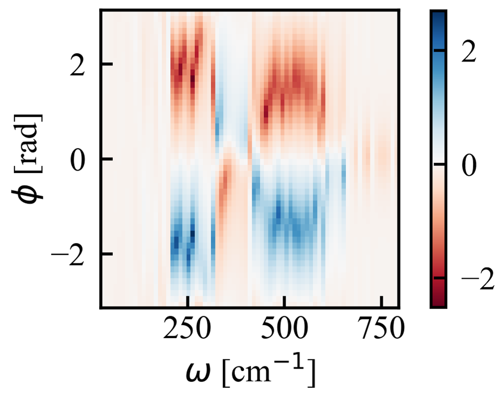

Authors: Jichen Feng, Ethan Abraham, Joseph E. Subotnik, Abraham Nitzan
Venue: The Journal of Chemical Physics 163(23): 234110 (2025)

We show that combining molecular chirality with phase-controlled driving can produce directionality (rectification) in vibrational energy transfer. Using classical models of a helical chain and a polyethylene double helix, we analyze how driving frequency, polarization, phase, and temperature control the sign and magnitude of the effect, and we find rectification can persist at room temperature.
Fig. 1: The figure above displays numerical simulation results for the helical chain model (left) and double helix model (right). The rectification ratio shows the greatest difference from unity when the driving phase is equal to ±π/2, and reversing the phase (φ → −φ) results in the reciprocal rectification ratio (JR/JL → JL/JR).
Fig. 2: Plot shows the heatmap of the rectification log10(JL/JR) vs driving phase φ and frequency ω. The phase dependence of the rectification effect is related to the structure of chiral phonon modes and the frequency dependence results from both the polarization of the phonon band structure and the phonon density of states.
@article{feng2025rectification,
title = {Rectification of Vibrational Energy Transfer in Driven Chiral Molecules},
author = {Feng, Jichen and Abraham, Ethan and Subotnik, Joseph E. and Nitzan, Abraham},
journal = {The Journal of Chemical Physics},
year = {2025},
volume = {163},
number = {23},
pages = {234110},
doi = {10.1063/5.0299947},
url = {https://doi.org/10.1063/5.0299947}
}